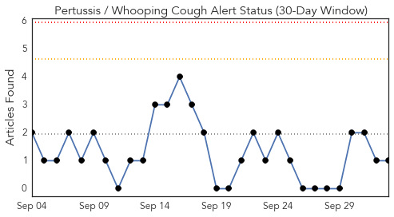
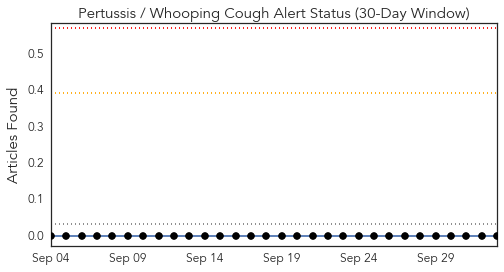
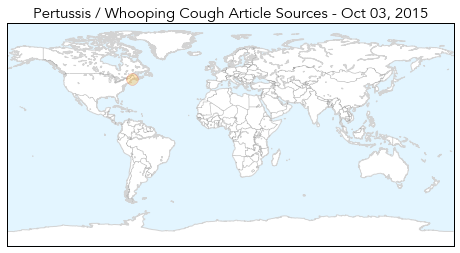
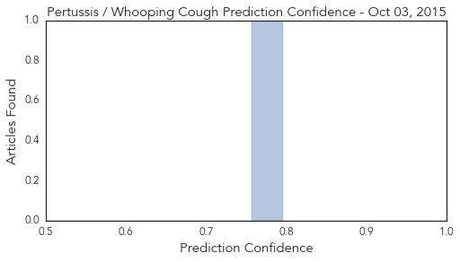
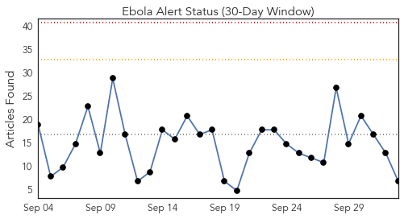
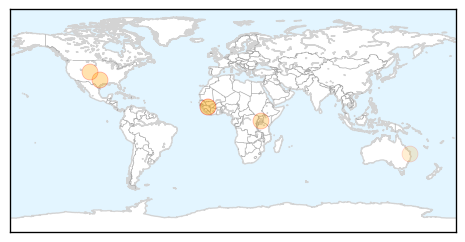
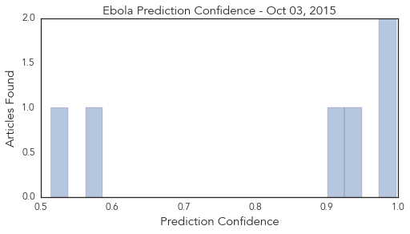

Pertussis
30-Day Web Trend
0 alerts, 0 warnings

30-Day Twitter Trend
0 alerts, 0 warnings

Article Locations
Article Confidences
Top Articles:
Top Tweets:
-
No tweets found for Oct 03, 2015
Ebola
30-Day Web Trend
0 alerts, 0 warnings

30-Day Twitter Trend
0 alerts, 0 warnings

Article Locations
Article Confidences
Top Articles:
Top Tweets:
- 0.775
- Sprinter loses family to Ebola facing deportation back to Sierra Leone - USA TODAY http://t.co/5hLaTGOQzi ebola EVD
- 0.564
- Panhandle Science Cafe topic: Ebola care - Washington Times http://t.co/2HDwBdovq8 ebola EVD
- 0.542
- Sierra Leone: Frontline Nurses In Aftermath of Ebola Outbreak Battle ... - Huffington Post http://t.co/R46i5LJ4Pe